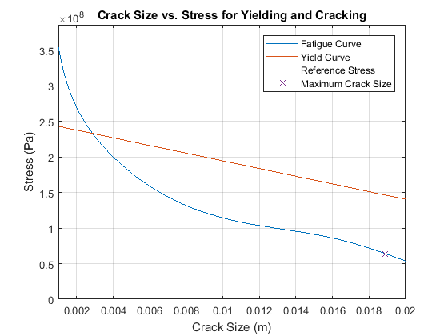

Contents
%%%%%%%%%%%%%%%%%%%%%%%%%%%%%%%%%%%%%%%%%%%%%%%%%%%%%%%%%%%%%%%%%%%%%%%%%%% % AAE 352 Project 2 -- Group 11 % This code is designed to calculate the changes in stress at given % striation measurements for the given dimensions, which were measured and % hard-coded into the program. % Then, using that value, the maximum crack size is calculated for the % given dimensions. For a given crack size, this program will plot the % fatigue curve and yielding curve on the same plot and show the % maximum crack size possible for our known reference stress and yield % stress. %%%%%%%%%%%%%%%%%%%%%%%%%%%%%%%%%%%%%%%%%%%%%%%%%%%%%%%%%%%%%%%%%%%%%%%%%%% %dimensions for material from project description: w = 23e-3; %constant D = 25.4e-3; %constant t = 9.4e-3; %constant yield_stress = 386e6; %Material Property KIC = 37e6; %Material Property
Section 1: Calculate Delta K
%Calculated using NASA document: %Interpolation for #3: ((.24) * (3e-9/3.1e-8))+16.68 a = [1.83e-3 3.81e-3 7.39e-3]; %Given in problem da_dn = [1.2/12 , 2.4 / 11 , 6/9]; %um/striation da_dn = da_dn .* 1e-6; %Convert to meters/striation delta_K = [8.97 , 11.07 , 16.7032]; %derived from table (Mpa * sqrt(m)) delta_K = delta_K * 1e6; %Convert to Pa * sqrt(m)
Section 2: Calculate linear regression of log(da/dn) vs log(delta_K)
This portion was completed using Microsoft Excel from excel: y = 3.0052x - 64.171 (y=mx + e^c)
C = 1.35173e-28; %Excel: =LN(-64.171) m = 3.01; %constant
Using this information, calculate reference stress
x = a./w;
beta_1 = 30.795.*x.^4 - 51.44 .* x.^3 + 29.462 .* x.^2 - 6.2025 .* x +2.0791;
delta_sigma = delta_K./(beta_1.*sqrt(pi.*a));
sigma_ref = mean(delta_sigma);
fprintf('Reference Stress: %.4f MPa\n',sigma_ref/1e6);
Reference Stress: 63.8990 MPa
The Next Section will plot and calculate the minimum crack size (a) for given yield stress
a = 1e-3:1e-6:20e-3; % redefine a as a range of possible crack sizes err = 1000; %initialize error sigma = zeros(size(a)); %Initialize cracking stress sigma_net = zeros(size(a)); %Initialize stress for yielding acr_calc= 0; %Initialize critical crack size calculation Atotal = (2*w+D)*t; %Total Area (constant) for i = 1:length(a) %Cycle through crack sizes x = a(i) / w; %This is the definition of x beta = 30.795.*x.^4 - 51.44 .* x.^3 + 29.462 .* x.^2 - 6.2025 .* x +2.0791; %recalculate Beta at each crack size sigma(i) = KIC / (beta*sqrt(pi*a(i))); %Create a vector of sigma at each crack size acr = ((KIC/(beta*sigma_ref))^2)/pi; %Calculate critical crack size if abs(acr - a(i)) < err %If error is less than the error from the previous iteration acr_calc = acr; %Save Critical Crack Size for printing err = abs(acr-a(i)); %Save new error end sigma_net(i) = yield_stress*(2*w-a(i))/(2*w+D); %Create a vector of sigma_net at each crack size sigma_ref_line(i) = sigma_ref; end plot(a,sigma); %plot sigma for each crack size hold on plot(a,sigma_net); %plot sigma_net for each crack size plot(a,sigma_ref_line); %plot a reference of our reference stress plot(acr_calc,sigma_ref,'x'); %Verify max crack size on graph fprintf('Maximum Crack Size: %.4f mm\n', acr_calc * 1e3);
Maximum Crack Size: 18.9031 mm
Format Graph
title('Crack Size vs. Stress for Yielding and Cracking'); ylim([0, yield_stress]); xlim([1e-3, .02]); legend('Fatigue Curve','Yield Curve','Reference Stress','Maximum Crack Size'); xlabel('Crack Size (m)'); ylabel('Stress (Pa)'); grid on